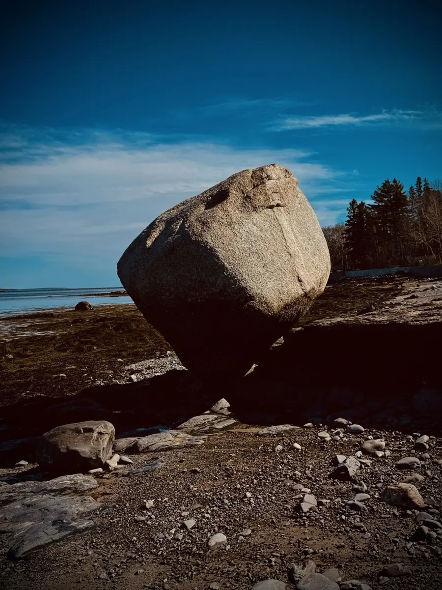
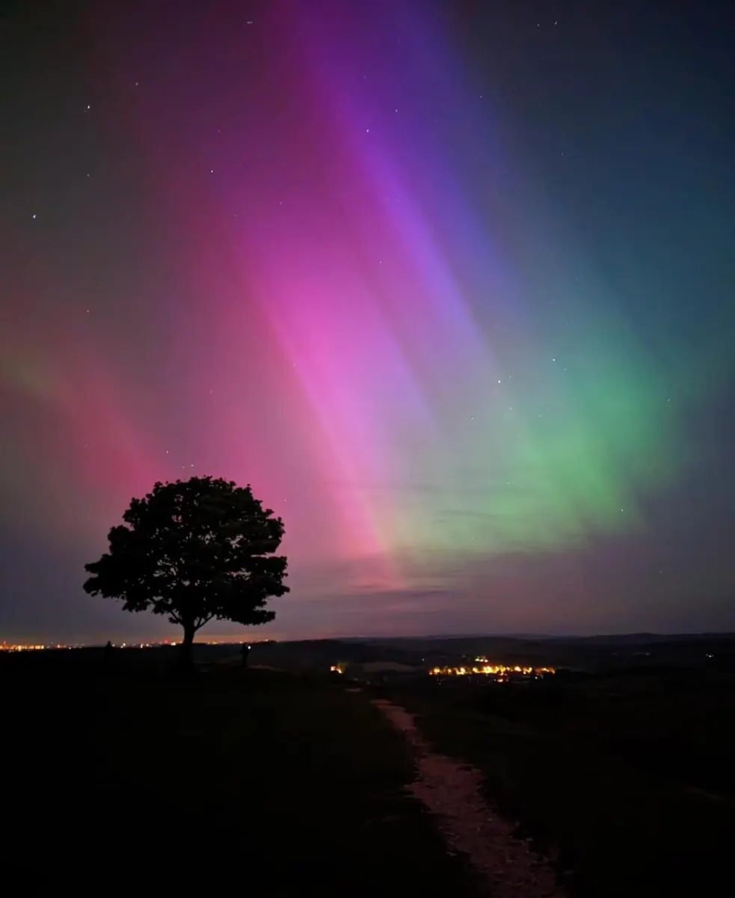

§01 — Disciplines
Thirty years of long-form, observational documentary — patience, proximity, and consent. From the Cannes-premiered feature Cargo to a current slate of six films in production across survivorship, ritual, activism and desert art.

Two decades of observation — portraiture, street, wildlife, fashion, food and documentary. Rooted in patience and the real moment over the staged one. London, New York, Manila, the American desert.

Commercially certified aerial cinematography (FAA Part 107, October 2025), including search-and-rescue support applications. The newest tool in a thirty-year kit.

Screenplays, articles, and a forthcoming 600-page travelogue — Somewhere, America — built from a five-month road trip: essays, photographs and cartoons.

Editing, sound design and finishing — a member of British Film Editors. The whole back half of the pipeline, in-house.
Cartoons, digital art and projection mapping — the playful end of a serious practice, woven through the books and films.

Adjunct professor (Idyllwild Arts), MET Film School, SAE and online — plus a PhD proposal on how digital platforms reshape society. TESOL certified, 2024.